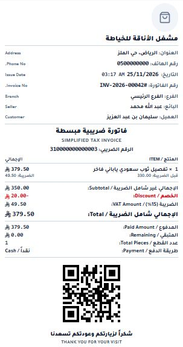
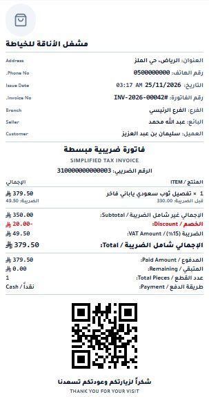
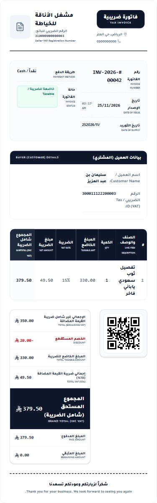

حراري 80mm الخطوات متتالية: كل لقطة فيها تغيير الخطوة السابقة أيضاً.
الافتراضي المثال الثابت: 350 قبل الضريبة، خصم 20، ضريبة 49.50.
إيقاف «عرض سعر الوحدة» قبل: لا يتغير شيء في الطباعة. بعد: يختفي عمود سعر الوحدة.
إيقاف «باركود الطلب» قبل: لم يكن الباركود يُطبع أصلاً. بعد: يُطبع رقم الفاتورة باركوداً حين يكون مفعّلاً، ويختفي حين يُوقف.
محاذاة الترويسة لليمين قبل: لا أثر للمحاذاة. بعد: الشعار والاسم لليمين.
قبل (الإنتاج الحالي) لا لقطة (الزر لم يكن له اسم، ولا أثر له في الطباعة)
بعد 
محاذاة الترويسة لليسار بعد: الشعار والاسم لليسار.
قبل (الإنتاج الحالي) لا لقطة (الزر لم يكن له اسم، ولا أثر له في الطباعة)
بعد 
رسالة الختام وسياسة الاستبدال قبل: رسالة ثابتة ولا سياسة. بعد: نص المحل نفسه، والسياسة تلتف في الورق.
إيقاف «الخصم» الخصم يبقى في الفاتورة الضريبية لأن مجموعها لازم يطابق. الخيار يخفيه فقط في إيصال بلا ضريبة.
A4 الخطوات متتالية: كل لقطة فيها تغيير الخطوة السابقة أيضاً.
الافتراضي المثال الثابت: 350 قبل الضريبة، خصم 20، ضريبة 49.50.
إيقاف «عرض سعر الوحدة» قبل: لا يتغير شيء في الطباعة. بعد: يختفي عمود سعر الوحدة.
إيقاف «باركود الطلب» قبل: لم يكن الباركود يُطبع أصلاً. بعد: يُطبع رقم الفاتورة باركوداً حين يكون مفعّلاً، ويختفي حين يُوقف.
محاذاة الترويسة لليمين قبل: لا أثر للمحاذاة. بعد: الشعار والاسم لليمين.
قبل (الإنتاج الحالي) لا لقطة (الزر لم يكن له اسم، ولا أثر له في الطباعة)
بعد محاذاة الترويسة لليسار بعد: الشعار والاسم لليسار.
قبل (الإنتاج الحالي) لا لقطة (الزر لم يكن له اسم، ولا أثر له في الطباعة)
بعد 
رسالة الختام وسياسة الاستبدال قبل: رسالة ثابتة ولا سياسة. بعد: نص المحل نفسه، والسياسة تلتف في الورق.
قبل (الإنتاج الحالي) بعد إيقاف «الخصم» الخصم يبقى في الفاتورة الضريبية لأن مجموعها لازم يطابق. الخيار يخفيه فقط في إيصال بلا ضريبة.